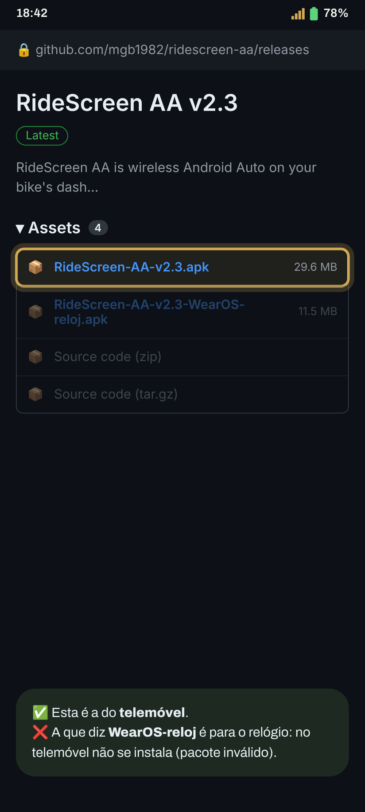
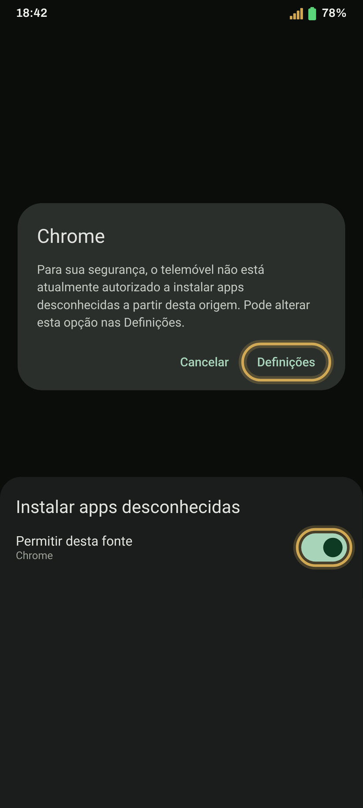
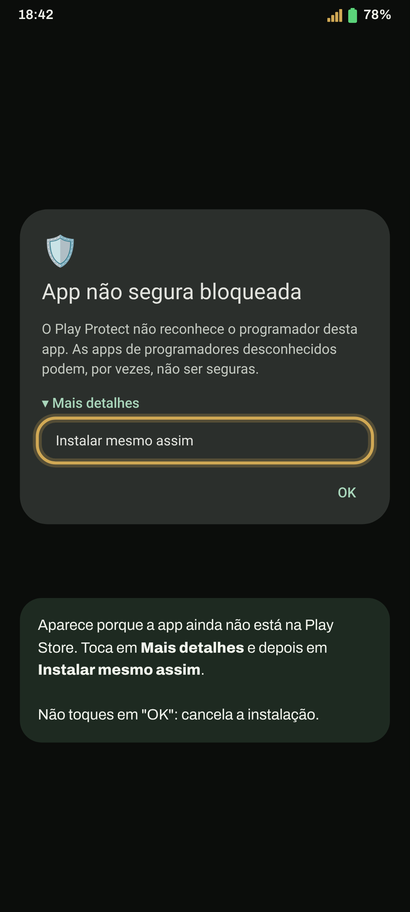
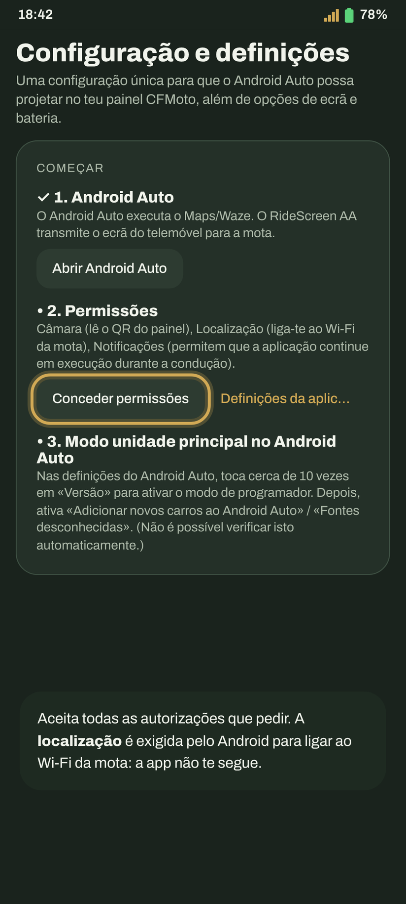
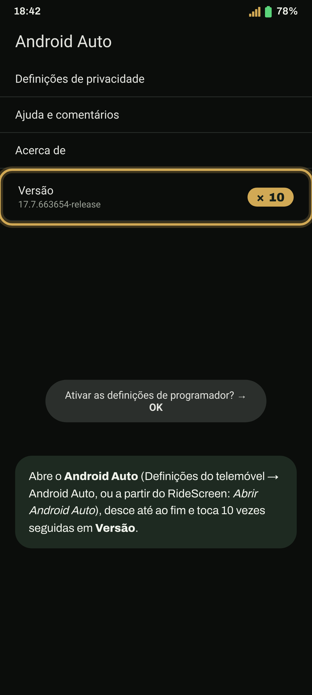
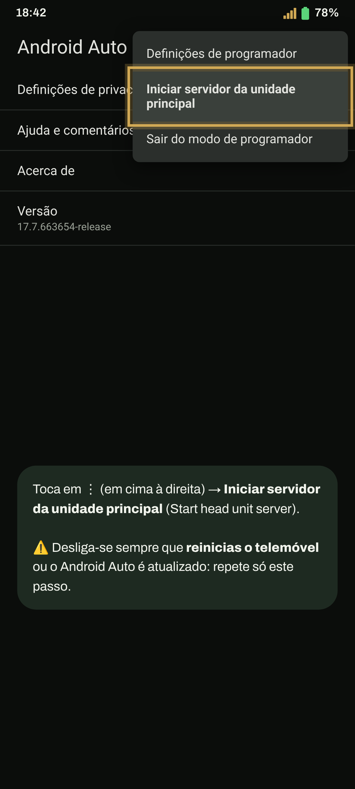
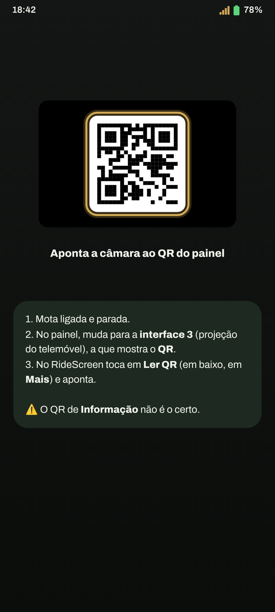
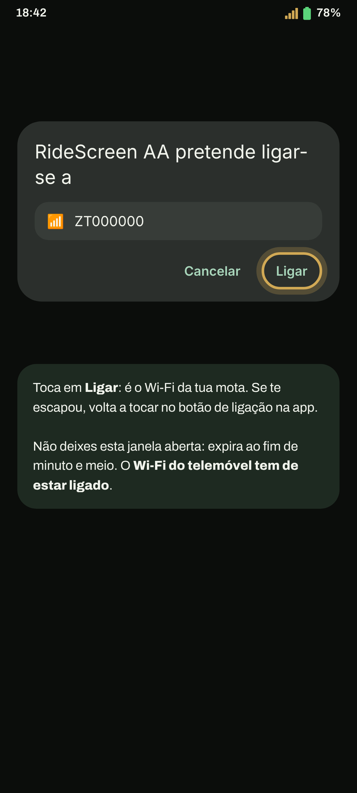
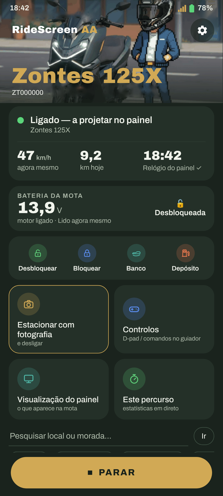

Android Auto no painel da tua Zontes, passo a passo. Da primeira vez demora uns minutos; depois é um toque, ou nem isso.
Tens um relógio Wear OS? Continua depois com o guia do relógio.
Toca no botão: a última versão é descarregada diretamente (RideScreen-AA-v2.4.apk ou a que estiver em vigor).
Descarregar o APKPreferes o GitHub? Na página da última versão, em Assets, toca no APK que começa por RideScreen-AA-v.

Abre o ficheiro descarregado. Se o Android disser que não pode instalar apps desta fonte, toca em Definições, ativa Permitir desta fonte e volta atrás.
Depois toca em Instalar.

Aparece porque a app ainda não está na Play Store. Toca em Mais detalhes e depois em Instalar mesmo assim.

Da primeira vez abrem-se as Definições. Aceita todas as autorizações que pedir, ou toca em Todas as permissões concedidas para as verificar todas de uma vez.
O Android exige a localização para ligar ao Wi‑Fi da mota e guardar as tuas viagens. A app não te segue.

Abre as definições do Android Auto (Definições do telemóvel → Android Auto, ou a partir do RideScreen). Desce até ao fim e toca 10 vezes seguidas em Versão. Aceita o aviso.
Só precisas de fazer isto uma vez.

No mesmo ecrã, toca em ⋮ (em cima à direita) → Iniciar servidor da unidade principal (Start head unit server).

No painel, muda para a interface de espelhamento de ecrã (a 3 na 125X): a da projeção do telemóvel, que mostra um código QR. No RideScreen toca em Ler QR (em baixo, em Mais) e aponta para ele.

Toca em Ligar no RideScreen. O Android pergunta se a app se pode ligar ao Wi‑Fi da mota (tem o nome da tua mota, p. ex. ZT…). Toca em Ligar.

Uns segundos depois, o Android Auto aparece no ecrã da mota. Podes guardar o telemóvel no bolso.
Da próxima vez, basta tocar em Ligar. Para que se ligue sozinha quando arrancas a mota: ⚙️ Definições → Ligar quando um dispositivo Bluetooth se ligar → escolhe o Bluetooth do painel (começa por «ZT») e permite Sobrepor a outras apps.
Dica: depois de ligada, podes mudar o painel para outra interface para ver o painel original. A app continua ligada e a registar a viagem, e quando voltas à de espelhamento o Android Auto está lá logo.
Da primeira vez que te ligas, a app pede o microfone: escolhe Enquanto uso a app para poderes usar o «Ok Google» e o botão de voz do intercomunicador.

Ativa o Wi‑Fi do telemóvel. Não precisas de te ligar a nenhuma rede: a app liga-se sozinha à da mota.
A app oficial da mota (Zontes / EasyConnection / Carbit) está a ocupar a ligação ao painel. Definições → Apps → essa app → Forçar paragem e volta a ligar. Se não a usas, o mais simples é desinstalá-la.
No RideScreen toca em ❓ Ajuda → Partilhar registos logo a seguir à falha e envia-o para o grupo, a dizer que mota e telemóvel tens. Os registos não incluem palavras-passe nem números de série.
O RideScreen AA é grátis e de código aberto, baseado no OpenCfMoto de Alexandru (zanderp). Não é uma app oficial da Zontes. As capturas são ilustrativas: os textos exatos podem variar no teu telemóvel.